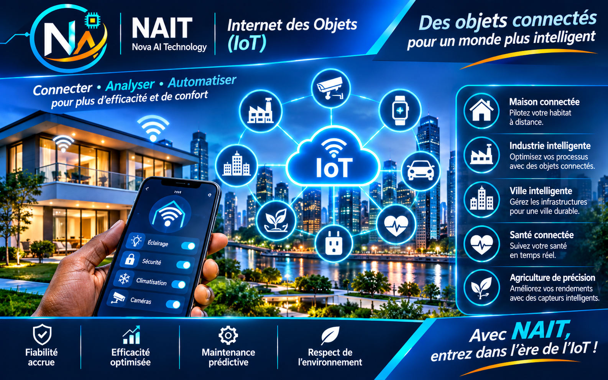
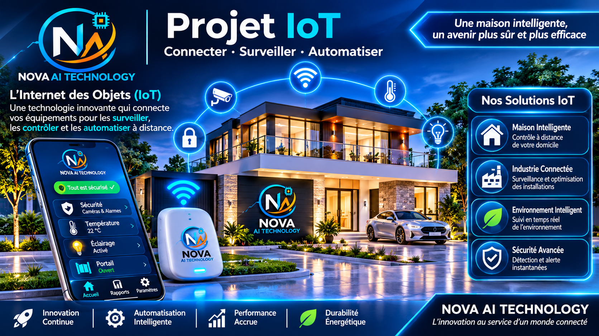

01 · Acquisition
Les capteurs mesurent les paramètres physiques : température, humidité, luminosité, mouvement ou niveau d'eau.
PROJET 03 · IoT & AUTOMATISATION
Connecter les équipements, collecter les données et automatiser les actions pour créer des environnements intelligents.

L'Internet des objets (IoT) permet à des équipements physiques de collecter, transmettre et échanger des informations grâce à des systèmes électroniques et des réseaux de communication.
Associées à l'automatisation, ces technologies permettent de surveiller un environnement, d'analyser des données et de commander des équipements à distance ou automatiquement.
FONCTIONNEMENT DU SYSTÈME
De la mesure physique à la commande intelligente, chaque élément participe au fonctionnement du système.

Les capteurs mesurent les paramètres physiques : température, humidité, luminosité, mouvement ou niveau d'eau.
Un microcontrôleur comme l'ESP32 ou l'Arduino analyse les informations et prend les décisions programmées.
Les données circulent entre les équipements et les interfaces grâce aux technologies de communication.
Un ordinateur ou un smartphone permet de visualiser les données et de suivre l'état des équipements.
Des relais, moteurs et autres actionneurs exécutent les commandes selon les conditions définies.
L'exploitation des données permet d'améliorer le suivi, la réactivité et les performances des installations.
APPLICATIONS
Des technologies adaptables à différents environnements et besoins.
Surveillance et commande intelligente des équipements d'une habitation.
Suivi des installations, acquisition de données et automatisation de certains procédés.
Mesure et surveillance de paramètres comme la température, l'humidité et le niveau d'eau.
Surveillance des conditions environnementales et automatisation de systèmes d'irrigation.
SUPERVISION CONNECTÉE
Visualisation des données et commande des équipements connectés.
Démonstration interactive · Données fictives
Concevoir des systèmes électroniques intelligents capables de connecter les équipements, d'exploiter les données et d'automatiser des tâches pour améliorer le contrôle et la supervision des installations.